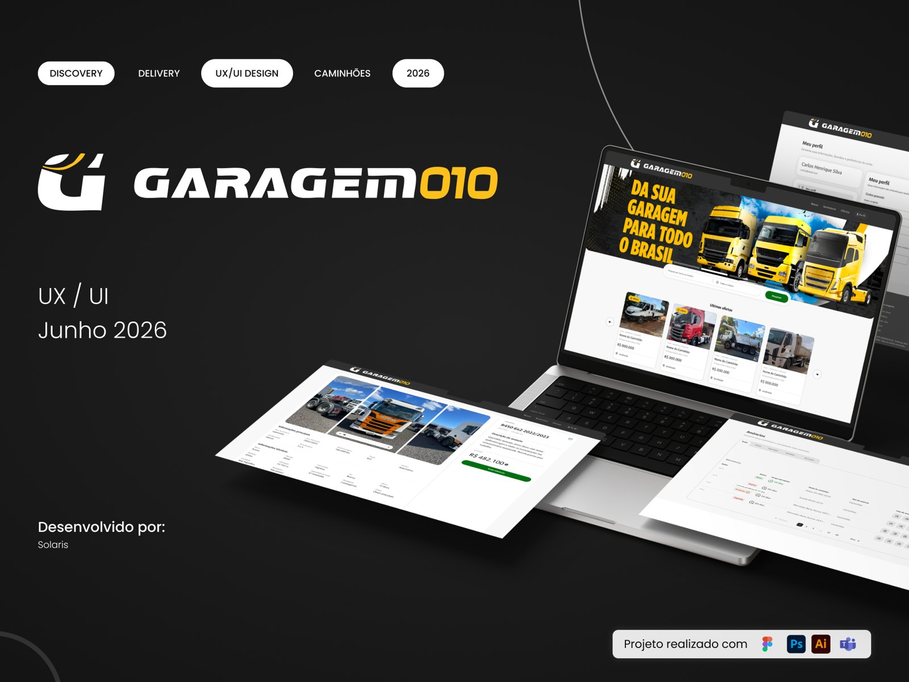
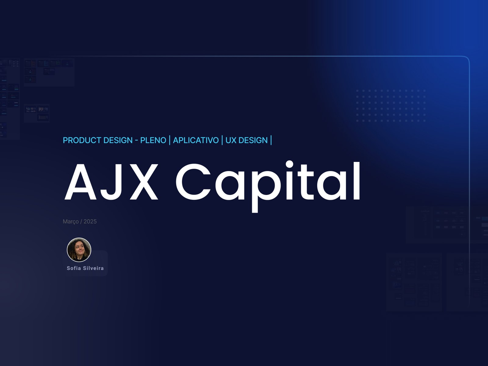

Casos selecionados
Projetos que mostram como aplico o design para resolver problemas reais, em diferentes contextos de produto e negócio.
Garagem 010
Experiência digital para conectar compradores e vendedores de veículos pesados, com busca e anúncios organizados em uma jornada mais clara.
- Papel
- UX/UI Design · Discovery e Delivery
- Contexto
- Solaris

AJX Capital
Redesign de uma experiência financeira para simplificar a apresentação das informações e tornar os passos mais claros para quem começa a investir.
- Papel
- Product Design · UX/UI
- Contexto
- App mobile

Gomes da Costa
Projeto de UX/UI para organizar a experiência de compra, facilitando a descoberta de produtos e a navegação até a decisão de compra.
- Papel
- UX/UI Design
- Contexto
- Social Unlimited
Design com propósito
Sou Product Designer com experiência na construção e evolução de produtos digitais em diferentes contextos de negócio. Meu trabalho conecta UX, UI e visão de produto para transformar problemas em experiências claras, funcionais e consistentes.
Gosto de entender o contexto antes de desenhar: investigar necessidades, mapear jornadas, explorar alternativas e considerar regras de negócio e limitações técnicas. Acredito que boas decisões de design surgem quando esses pontos são analisados em conjunto.
Trabalho em parceria com Produto e Desenvolvimento, acompanhando as soluções da concepção ao handoff e à validação. Para mim, o trabalho não termina em uma interface bonita: ele precisa fazer sentido para quem usa e ser viável para quem constrói.
- Desde 2021Atuando com UX/UI
- SolarisCofundadora e Product Designer
- FormaçãoAI Designer e Prototipação com IA (Tera)
- OndeSão Paulo, Brasil
Do wireframe ao protótipo de alta fidelidade.
- Figma
- FigJam
- Figma Make
- Adobe XD
- Pacote Adobe
- IA (Claude)
- ChatGPT
Entender o usuário e validar antes de investir em desenvolvimento.
- Maze
- Hotjar
- Clarity
- Google Analytics
- Testes com usuários
- Análise de dados
Alinhar Produto, Design e Engenharia no mesmo ritmo.
- Jira
- Confluence
- Slack
- Metodologias ágeis
O que eu aplico em cada projeto.
- Product Discovery
- Visão de produto
- User Interface (UI)
- Design System
- Handoff
- Gamificação